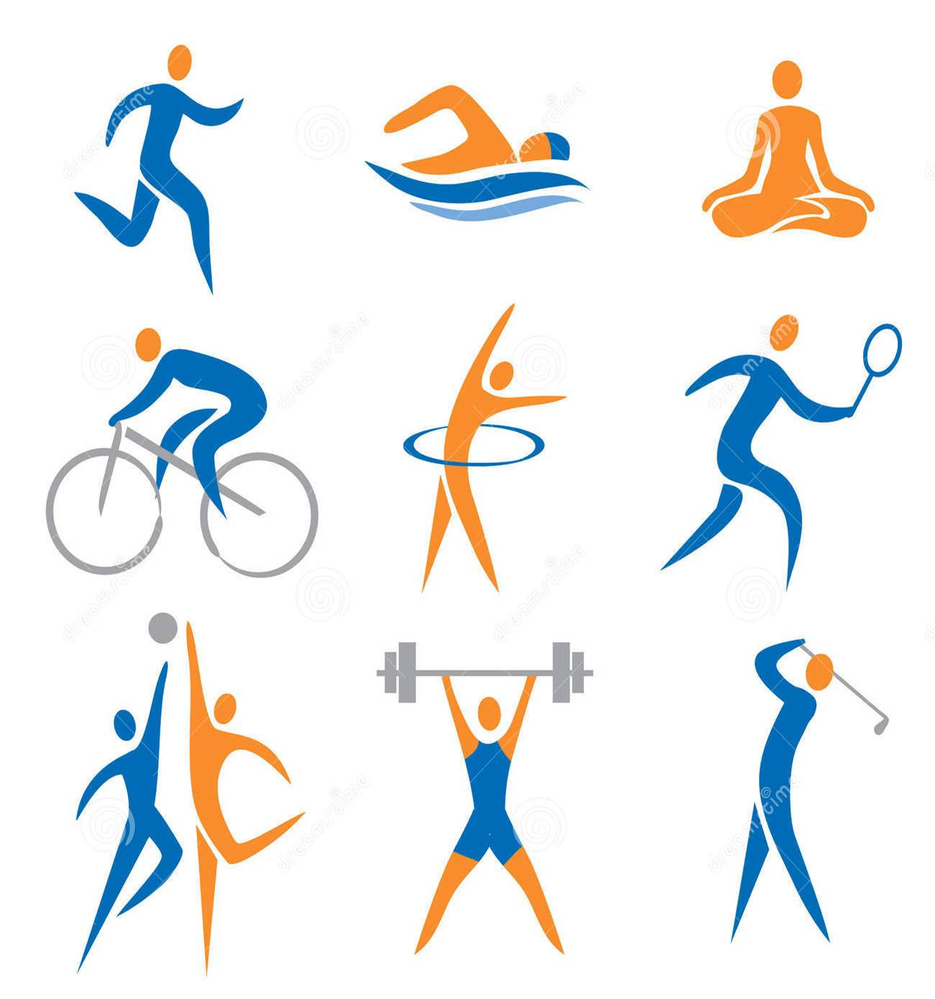

Término en Wikipedia
Término en Wikipedia
 En el latín es donde encontramos el origen etimológico de la palabra deporte y en concreto se halla en el verbo deportare que puede traducirse como deportar. Viéndolo así nos cuesta entender qué tienen en común dicho verbo y el concepto que nos ocupa, sin embargo, tenemos que decir que la evolución será la que determine la conexión.
Y es que para los romanos aquella citada forma verbal tenía dos significados, por un lado el de transportar y por otro el que hacía referencia a unas celebraciones de tipo triunfal (deportae lauream) en las que los generales llevaban rendían honores a Júpiter y llevaban una corona de laurel.
Partiendo de todo ello, el concepto deportare que se utilizaba también como sinónimo de sacar algo, de llevarlo lejos,…fue evolucionando como salir al campo, respirar aire fresco y hacer ejercicio. Una expresión esta última que ya se adecúa a la perfección a la acepción que hoy le damos al término deporte.
La práctica de un deporte puede desarrollarse por motivos de salud, ocio o profesionales. Un deporte, después de todo, es algún tipo de ejercicio físico o juego que, en su desarrollo, es competitivo y exige el respeto por ciertas normas y reglas.
Por ejemplo: “Todos los viernes hago deporte por la mañana”, “El pediatra sugirió que mi hijo hiciera deporte para mejorar su condición física”, “El deporte mueve millones de dólares en todo el mundo”.
La capacidad y la respuesta física del deportista son muy importantes para el resultado final de la competencia, aunque otros factores también resultan vitales, como el equipamiento del competidor o su inteligencia. Hay que destacar que, más allá de la competencia y del deseo de ganar, el deporte brinda entretenimiento a quienes lo practican y lo ven. Aunque a veces suelen confundirse los conceptos de deporte y actividad física, éstos no son sinónimos. La actividad física es una simple práctica, mientras que el deporte implica una competencia que siempre arroja un resultado.
Así, por ejemplo, entre los deportes más importantes o los que mayor seguimiento tienen en todo el mundo se encontrarían el fútbol, el baloncesto, el tenis, el golf, el atletismo…Incluso podríamos subrayar que en muchos lugares se conoce al fútbol como el deporte rey por ser el que consigue despertar más interés.
De esta forma, es frecuente que en muchas publicaciones de carácter especializado se diga: Messi es uno de los grandes mitos del deporte rey, del fútbol, pues nadie como él tiene la capacidad goleadora y la cualidad de desestabilizar a la defensa del equipo rival.
Diversos hallazgos arqueológicos demuestran que, en el año 4.000 A.C., ya se practicaban deportes en diversas regiones de China. En el Antiguo Egipto, por otra parte, se realizaban competencias de pesca, lanzamiento de jabalina, natación y lucha. También en la Antigua Persia existían los deportes, como es el caso de ciertas artes marciales.
Con el aumento de la popularidad de los deportes y del número de aficionados que se acercaban a ver la práctica deportiva de los atletas, sumado al auge de medios de comunicación como la televisión o la radio y el mayor tiempo que la gente le puede dedicar al ocio en comparación con otras épocas, los deportes pasaron a profesionalizarse. De esta forma, los deportistas comenzaron a recibir dinero por dedicarse a entrenar y competir.
La popularidad de los deportes varía según el país. Mientras que en América Latina y en Europa el fútbol despierta pasión, en Estados Unidos prefieren el béisbol y el fútbol americano.